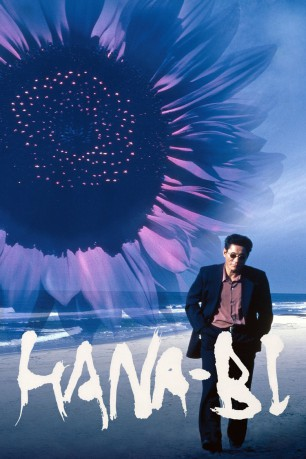

#2632 Hana-bi - Feuerblume
Alternativ: Fireworks (Englischer Titel)
 
 IMDB-Wertung: 7.8 / 10
IMDB-Wertung: 7.8 / 10  Metascore: 0
Metascore: 0 
Mit Hana-Bi (Feuerblume oder Feuerwerk) gelang Takeshi Kitano, der sowohl die Hauptrolle spielte als auch das Drehbuch schrieb und Regie führte, der internationale Durchbruch. Der Film bekam 1997 den Goldenen Löwen in Venedig verliehen.
Jahr: 1997
Dauer: 103 Minuten
FSK: 16
Land: Japan Studio: Capelight PicturesTonspuren:
Untertitel: Deutsch,
Auflösung: 1080p (1920x1040) Größe: 6717 MB
Genre: Thriller, Drama, Krimi, Liebe
Regisseur:  Takeshi Kitano
Takeshi Kitano
Drehbuch: Takeshi Kitano
Soundtrack: Joe Hisaishi
Darsteller:
 Takeshi Kitano als Yoshitaka Nishi
Takeshi Kitano als Yoshitaka Nishi- Yûko Daike als Tanaka's widow
- Kayoko Kishimoto als Miyuki, Nishi's wife
- Ren Ôsugi als Horibe
- Susumu Terajima als Nakamura
 Tetsu Watanabe als Tesuka
Tetsu Watanabe als Tesuka- Hakuryû als Yakuza Hitman
- Yasuei Yakushiji als Criminal
- Tarô Itsumi als Kudo
- Ken'ichi Yajima als Doctor
- Makoto Ashikawa als Tanaka
- Tsumami Edamame als Businessman Throwing Rocks
- Yûrei Yanagi als Chef #1
- Sujitarô Tamabukuro als Chef #2
- Tokio Seki als Old Hick
- Motoharu Tamura als Chief Detective
- Hitoshi Nishizawa als Yakuza Head
- Shoko Kitano als Girl Who Flies Kite
- Kiyoko Kitazawa als Nurse B
- Takayuki Konishi als Detective B
- Rinko Morikawa als
- Yoshiyuki Morishita als Hoodlum B
- Omiya no Matsu als
- Manzô Shinra als Man shot in face
- Sumiko Takai als
 Kanji Tsuda als
Kanji Tsuda als - Keiko Yamamoto als Nurse A
- Shûji Ôtsuki als
Datei: X:\HD-Eastern-Modern(A-M)\Hana-bi - Feuerblume (1997, FSK16, 1920x1040).mkv seit 27.11.2015
Festplatte: HD Eastern+Western
 Es gibt insgesamt 104 Filme in der Gruppe 'HD-Eastern-Modern(A-M)'
Es gibt insgesamt 104 Filme in der Gruppe 'HD-Eastern-Modern(A-M)'